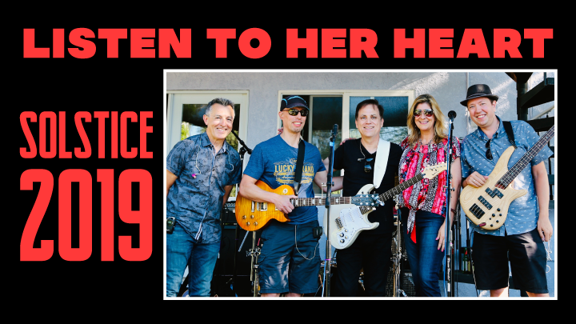

|

Behind The Scenes #6
Christmas Song #9
Santa Claus Is Back In Town (link to video)
It's hard to believe that this is the ninth year I've been doing these
Christmas songs.
Part of the fun of doing these songs is just listening to all the different
Christmas songs that have been done before. I was reasonably familiar with all the
old-timie classics. But I had no idea that so many popular artists had
written Christmas songs or remade and old classic in a new style.
I pick songs where I like something about the melody and the arrangement, where it's
something I enjoy listening to. Then I try to think of ways I can make it my own,
what would I change about it.
working out an arrangement
adding the video
working with other artists to get tracks and video
it's all ad lib and ad hoc
realizing what I want after all the video is done
trying to get something close to what I want with video tricks
|